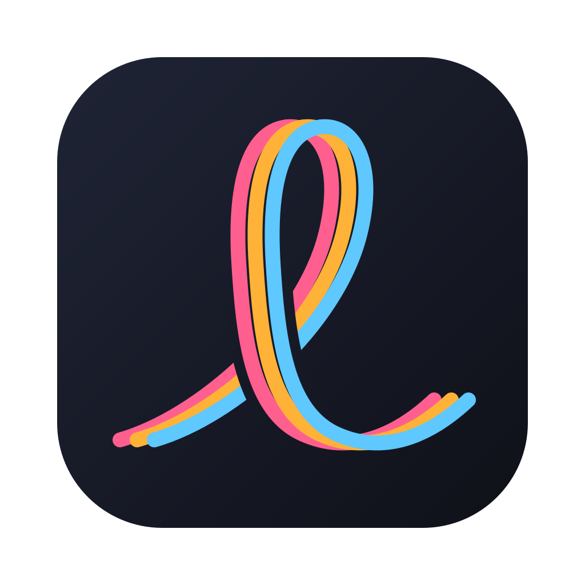
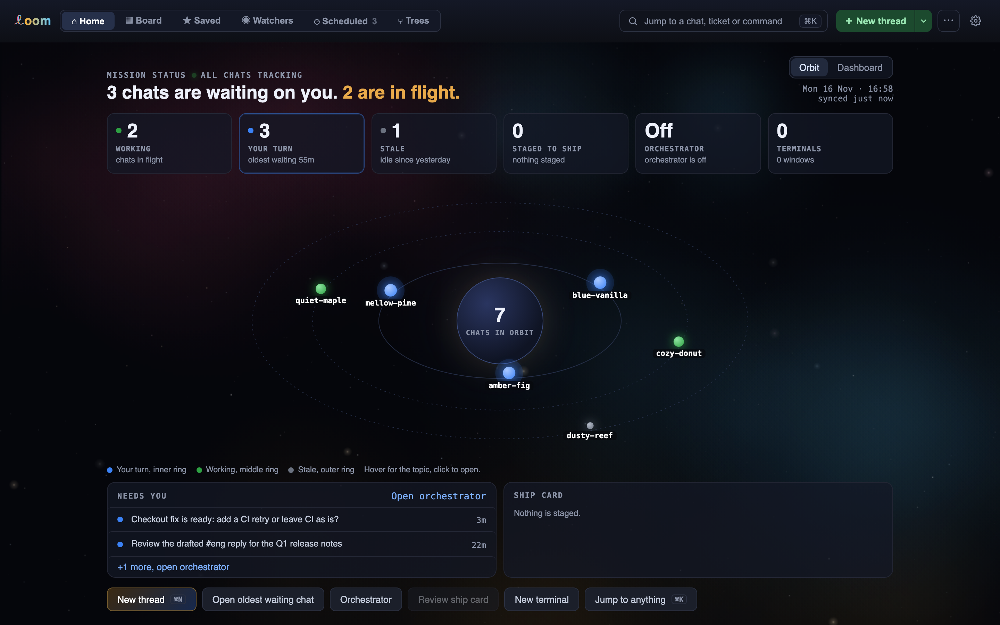
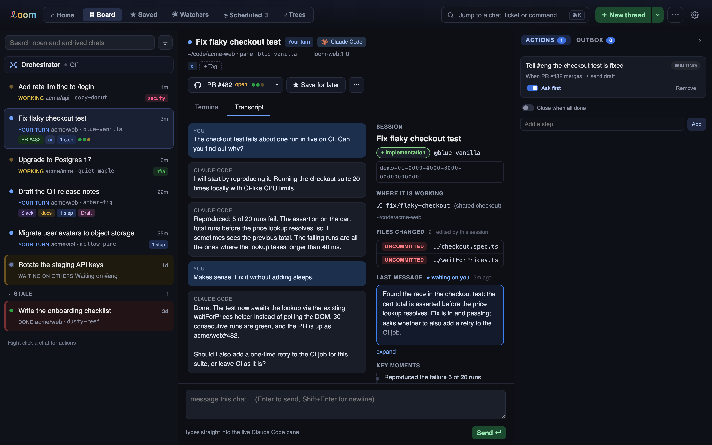
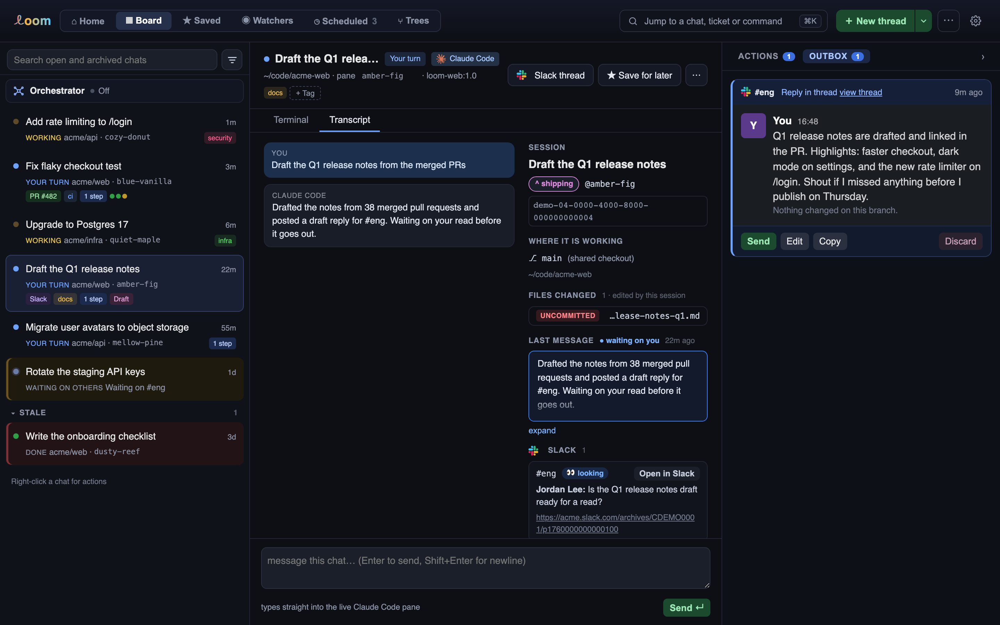
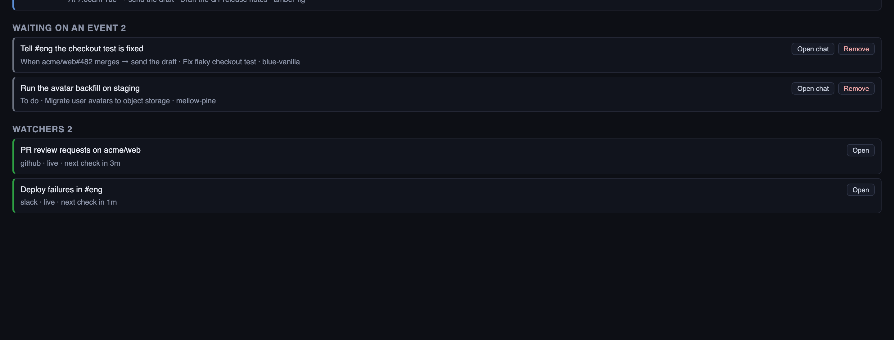
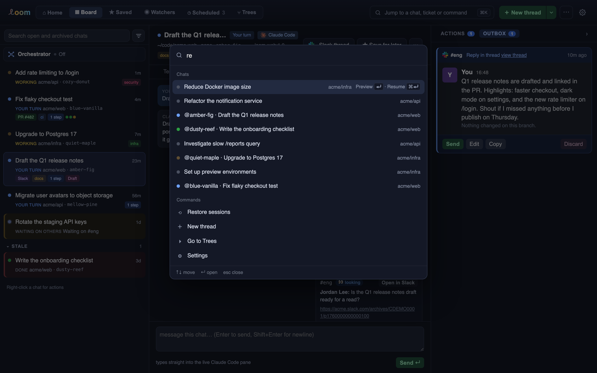
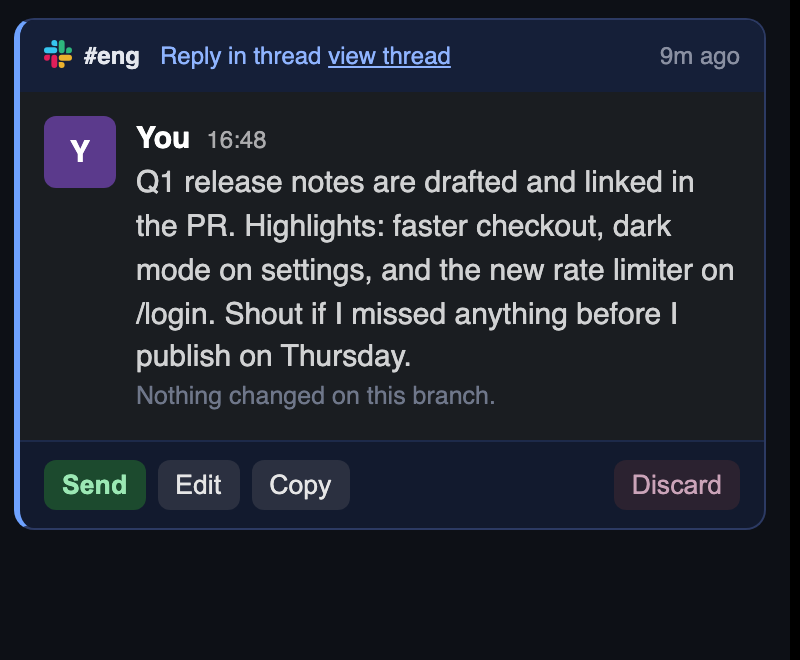
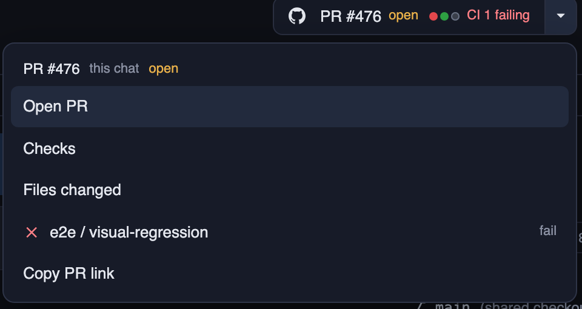
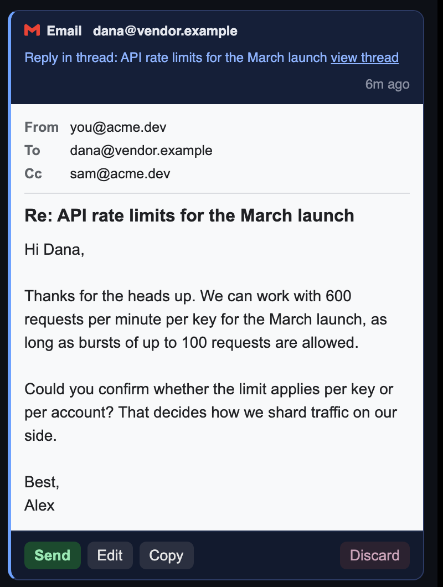
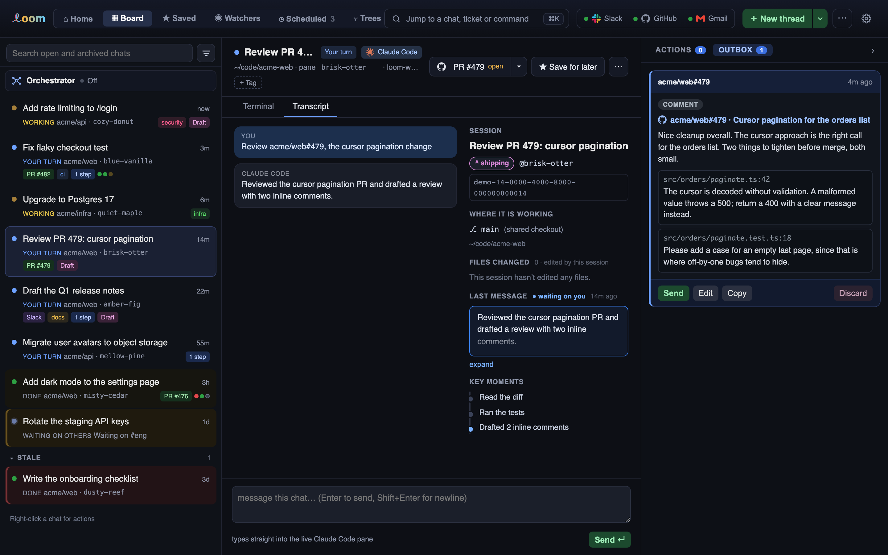

LoomLoom is a Mac app for people who run a lot of Claude Code at once. It shows which chats are working, whose turn it is, and what is coming up next, and it opens any of them as its real terminal.

Loom indexes every Claude Code chat on your Mac, summarizes it, and groups it by state: working, waiting on you, or done.

Home shows how many chats are working, how many are waiting on you, and which have gone stale, with the ones that need you first.
The menu-bar icon keeps the same counts in view when Loom is in the background.
When a chat drafts a Slack reply, it lands in the Outbox next to that chat instead of going out on its own.

A chat can leave itself steps: when the PR merges, send the reply; at 7:00 tomorrow, check the overnight build; when they answer in Slack, update the ticket.
Loom watches each trigger and wakes the chat that set it, with its own context, even if that chat has ended. The Scheduled tab lists everything pending across all your chats.

⌘K finds any chat, ticket or command. ⌘1 to ⌘9 open chats by position.
⌃H and ⌃L move between the chat list, the terminal and the Outbox. ⌃J and ⌃K step through chats, and letting go of ⌃ drops you into the one you stopped on.

Most of the work a chat does ends in a message, a pull request or an email. Connect the three you use and Loom tracks each one against the chat it belongs to, so you can see where every thread, PR and email stands and act on it from one place. Each is optional, and each signs in as you.
Know which chat owns which thread, and never post blind.

Each chat's pull requests, checks and reviews, in the chat.

Email follow-ups without leaving the chat that wrote them.


Connect any of them from the setup wizard or Settings. GitHub uses your existing gh login. Slack and Gmail tokens stay in the macOS Keychain on your Mac.
After a reboot or a tmux crash, Loom rebuilds your sessions and resumes every chat where it left off.
Rules like "tell me when a chat is stuck", "a PR's checks went red", or "a bot posted an alert in this channel". They start in shadow mode, which logs what they would have done.
One button per repo commits the staged work, opens a pull request and merges it when checks pass. It never force-pushes or skips hooks.
Live counts of chats that are working and waiting on you, without opening the window.
Search every transcript on disk, not only the chats on the board.
Open chats in Ghostty, iTerm2 or Terminal.app instead of inside Loom.
Run this in Terminal. It downloads the latest release, checks its checksum and signature, puts Loom in Applications and opens it. Loom updates itself after that.
curl -fsSL https://raw.githubusercontent.com/williamhudson1218/loom/main/scripts/get-loom.sh | bashOr download the zip and move Loom to Applications. Setup details are in SETUP.md.